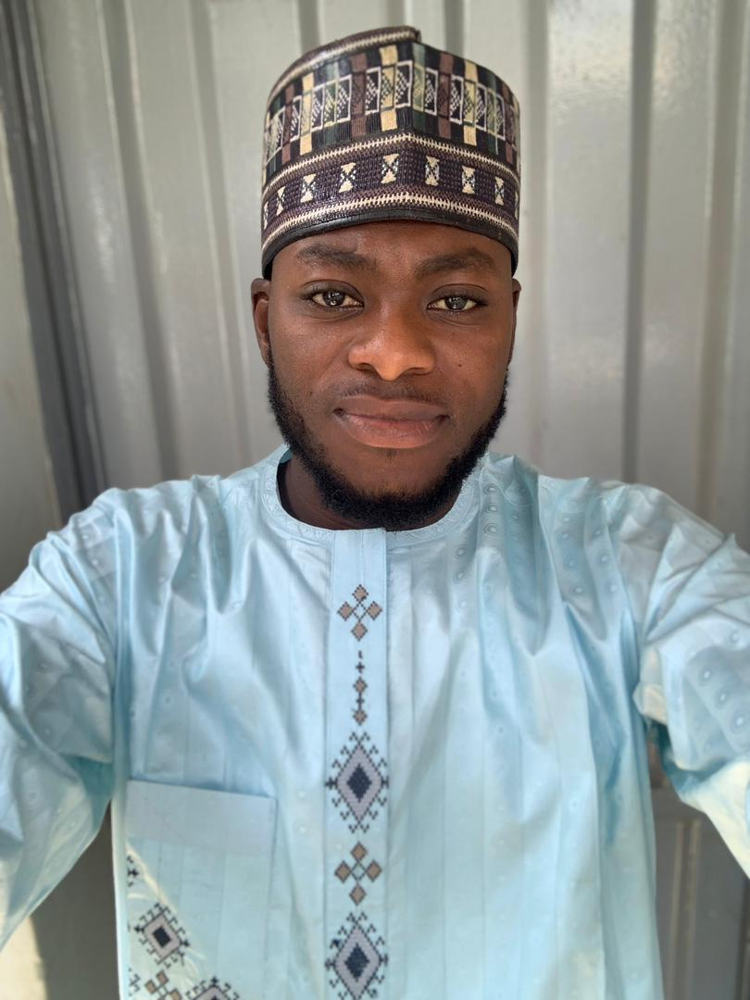

Learn more about my journey, education, and passion for engineering
I am Bashir Atiku, a Computer Engineering student at Ahmadu Bello University, Zaria, currently completing my undergraduate studies with a particular interest in Control Engineering and automation.
My passion for engineering comes from my curiosity about how hardware, software, and control systems work together to solve real-world problems. Throughout my academic journey, I have developed knowledge in areas such as computer systems, programming, electronics, control systems, embedded systems, instrumentation, automation, and system modelling.
I enjoy solving technical problems, learning new technologies, working on engineering projects, and exploring how intelligent systems can be applied to practical challenges.
My long-term goal is to build a career in an area where I can combine Computer Engineering, Control Engineering, software, automation, and intelligent technology to develop useful solutions for real-world applications.

2019 – 2026
B.Eng. Computer Engineering — Control Engineering Focus
Currently completing my undergraduate studies as a 500-level Computer Engineering student.
Academic Focus Areas:
2012 – 2018
Secondary Education
Completed my secondary education, developing the academic foundation and problem-solving skills that prepared me for university-level engineering studies.
2004 – 2012
Primary Education
Completed my primary education and developed the foundational knowledge and skills that began my academic journey.
Systems analysis, feedback control, process optimization, and automation
Architecture, digital systems, and computer organization
Microcontrollers, sensors, and hardware-software integration
Programming languages and software engineering principles
My Curriculum Vitae provides a comprehensive overview of my academic achievements, technical expertise, project experience, and professional development throughout my engineering journey.
Download my detailed CV to learn more about my complete academic and professional background, achievements, and career trajectory.
Get a detailed overview of my education, skills, and professional experience
Download CV (PDF)Updated: August 2026
My career path is driven by a passion for engineering excellence and a desire to make meaningful contributions to technological advancement.
I am deeply passionate about control systems, automation, and process optimization. I aspire to work on designing and implementing sophisticated control systems that solve complex industrial challenges and improve operational efficiency.
I am interested in developing embedded systems and IoT applications that connect physical devices with intelligent software. Creating smart, connected solutions that enhance real-world problem-solving is a core career aspiration.
Robotics represents the convergence of my technical interests. I aspire to contribute to developing robotic systems and intelligent automation solutions that can perform complex tasks autonomously and adaptively.
I am passionate about improving industrial processes through better design, efficiency optimization, and system integration. Contributing to industrial advancement and sustainability is an important career objective.
I am interested in pursuing research opportunities in control systems, embedded systems, and automation. Contributing to technological innovation and advancing engineering knowledge through R&D is a long-term career goal.
Combining my passion for programming with engineering principles, I aspire to develop high-quality software solutions that integrate with hardware systems to create comprehensive engineering solutions.
Committed to delivering high-quality engineering work with attention to detail and continuous improvement
Dedicated to exploring new approaches and developing creative solutions to complex engineering challenges
Believing in the power of collaborative problem-solving and effective team communication
Committed to lifelong learning and staying updated with emerging technologies and best practices